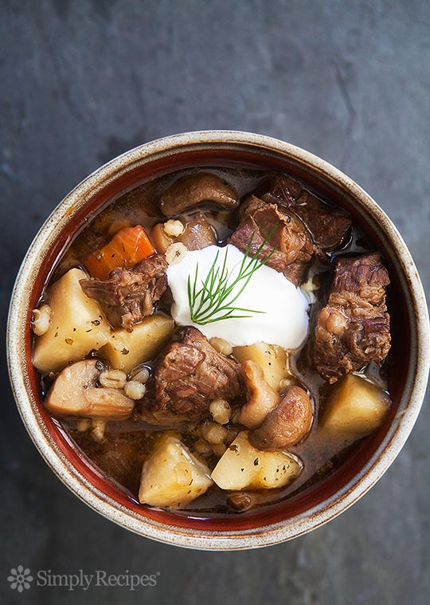
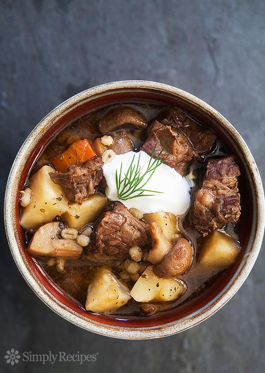

Back
Beef barley mushroom stew
Ingredients
- 2 Tbsp unsalted butter
- 2-3 pounds beef chuck, cut into chunks Salt
- 3 cups chopped onions
- 1 pound button or cremini mushrooms, quartered if small or 1/4-inch sliced
- 1 quart beef or chicken broth
- 3 cups water
- 2 teaspoons dried marjoram
- 1 cup pearl barley
- 1 cup roughly chopped carrot
- 3 cups celery root, peeled and chopped into 3/4-inch to 1-inch chunks Black pepper
- About 1/2 cup sour cream (around 1 Tbsp sour cream per serving) Dill for garnish
Method
-
In a Dutch oven or other large, lidded pot, melt the butter over medium-high heat. Add enough pieces of the beef to sear in the pot without crowding. You will need to brown the meat in several batches. Salt the beef as it cooks, and set aside browned pieces in a bowl.
-
When all the beef has browned, add the onions. As the onions release some of their water, use a wooden spoon to scrape any browned bits off the bottom of the pot. Sprinkle a little salt over the onions as they cook. Lower the heat to medium and cook the onions until they begin to brown, 5-6 minutes.
-
When the onions have lightly browned, mix in the mushrooms and increase the heat to high. Cook the mushrooms until they release their water, about 2-3 minutes.
-
Add the beef back to the pot and sprinkle with marjoram. Add 1 cup of the stock and use the wooden spoon to scrape any browned bits off the bottom of the pot. Add the rest of the stock and water and bring to a simmer. Cover the pot, lower the heat to low and simmer very gently for 1 hour.
-
Add the barley, celery root and carrots, stir well and recover the pot. Simmer gently until the barley and celery root are tender, between 40 minutes and an hour.